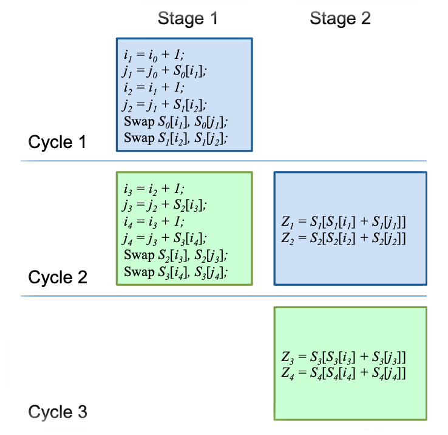

PhD Thesis (submitted in 2013, degree awarded in 2014)
Indian Statistical Institute, Advisor: Subhamoy Maitra
PDF version of the Thesis | Slides from the Thesis Defense
RC4 has been the most popular stream cipher in the history of symmetric key cryptography. Designed in 1987 by Ron Rivest, RC4 is the most widely deployed commercial stream cipher, having applications in network protocols such as SSL, WEP, WPA and in Microsoft Windows, Apple OCE, Secure SQL, etc. The enigmatic appeal of the cipher has roots in its simple design, which is undoubtedly the simplest for any practical cryptographic algorithm to date. In this thesis, we focus on the analysis and implementation of RC4.
For the first time in RC4 literature, we report significant keystream biases depending on the length of RC4 secret key. In the process, we prove two empirical biases that were experimentally reported and used in recent attacks against WEP and WPA by Sepehrdad, Vaudenay and Vuagnoux in EUROCRYPT 2011. In addition to this, we present a conclusive proof for the extended keylength dependent biases in RC4, a follow-up problem to our keylength dependent results, identified and partially solved by Isobe, Ohigashi, Watanabe and Morii in FSE 2013.
In a recent result by AlFardan, Bernstein, Paterson, Poettering and Schuldt, to appear in USENIX Security Symposium 2013, the authors ob- served a bias of the first output byte towards 129. While attempting the proof of this bias, we observed that the bias occurs prominently only for certain lengths of the RC4 secret key. In addition, our findings revealed that this bias may be related to the old and unsolved problem of ‘anomalies’ in the distribu- tion of the state array S0, right after the Key Scheduling Algorithm. In this connection, we prove the bias in (S0[128] = 127), a problem left open for more than a decade since the observation of anomaly pairs by Mantin in 2001.
Subsequently, we present theoretical proofs of some significant initial-round empirical biases involving the state variables of RC4, observed by Sepehrdad, Vaudenay and Vuagnoux in SAC 2010. We also study the non-random behavior of index j and completely characterize the first two instances j1, j2 of the index. In the same part of the thesis, we show that there are certain events in the RC4 keystream that leak state information with probability 3/N, higher than the best existing glimpse correlations identified by Jenkins in 1996.
We further study the short-term and long-term biases in RC4 keystream bytes. In the process, we derive the complete probability distribution of the first byte of RC4 keystream, a problem left open for a decade since the observation by Mironov in CRYPTO 2002. In addition to this, we contradict a claim by Mantin and Shamir from FSE 2001 by proving that there exist positive biases towards zero for all the initial bytes 3 to 255 of RC4.
In the recent work of AlFardan, Bernstein, Paterson, Poettering and Schuldt, extensive computations were conducted to identify significant short- term single-byte keystream biases of RC4, some of which already exist in the current literature, and some of which are new. We prove (almost) all new, unproved or partially proved significant biases observed in the aforesaid work. We also investigate for long-term non-randomness in the keystream, and prove a new long-term bias of RC4. Our proofs and observations in this thesis, along with their connections to the contemporary and old results, provide a comprehensive view on the state-of-the-art literature in RC4 cryptanalysis.
In the second part of this thesis, we systematically study the hardware implementation of RC4, and propose the fastest known design for the cipher. For the first time in the literature, we exploit the idea of loop unrolling in RC4 hardware design, and subsequently combine hardware pipelining to loop unrolling in a hybrid architecture that produces 2 bytes-per-cycle throughput in RC4. This is better than the existing 3 cycles-per-byte design by Kitsos, Kostopoulos, Sklavos and Koufopavlou, and the 3 cycles-per-byte and 1 cycle- per-byte patents of Matthews Jr. We have optimized and implemented our proposed designs using VHDL description, synthesized with 130 nm, 90 nm and 65 nm fabrication technologies, for proper comparison with existing designs in terms of keystream throughput and hardware footprint.
Biases in the RC4 Keystream
Best Implementation of RC4